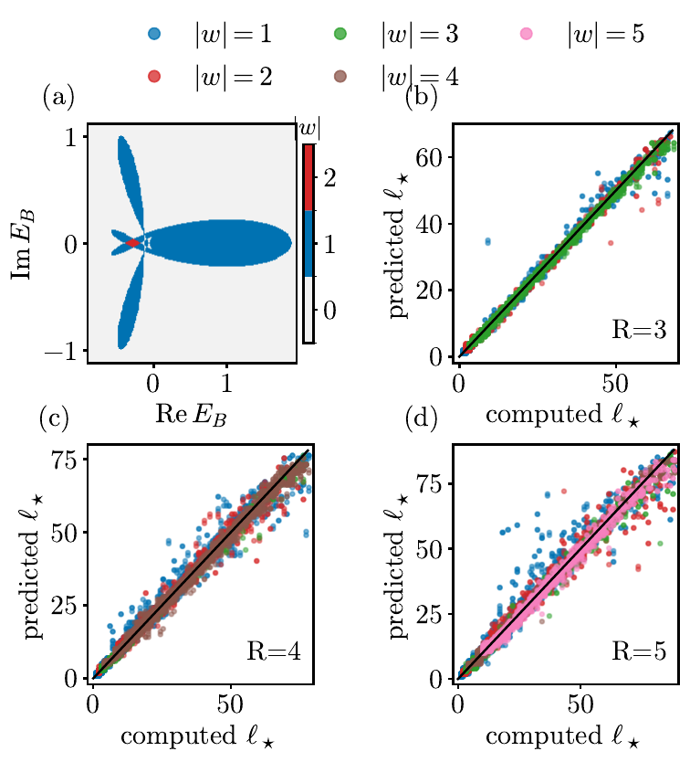
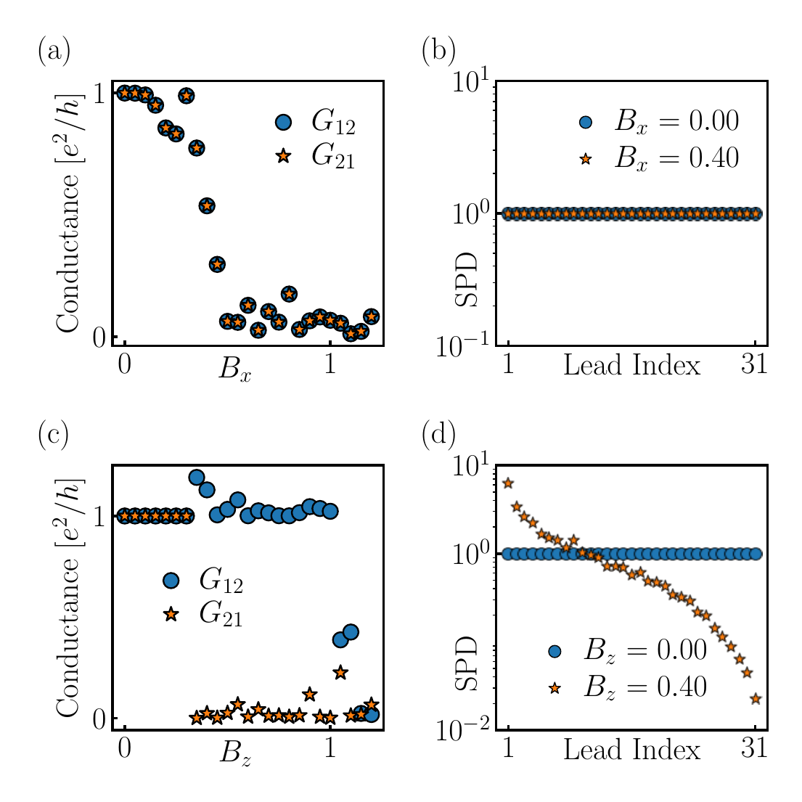
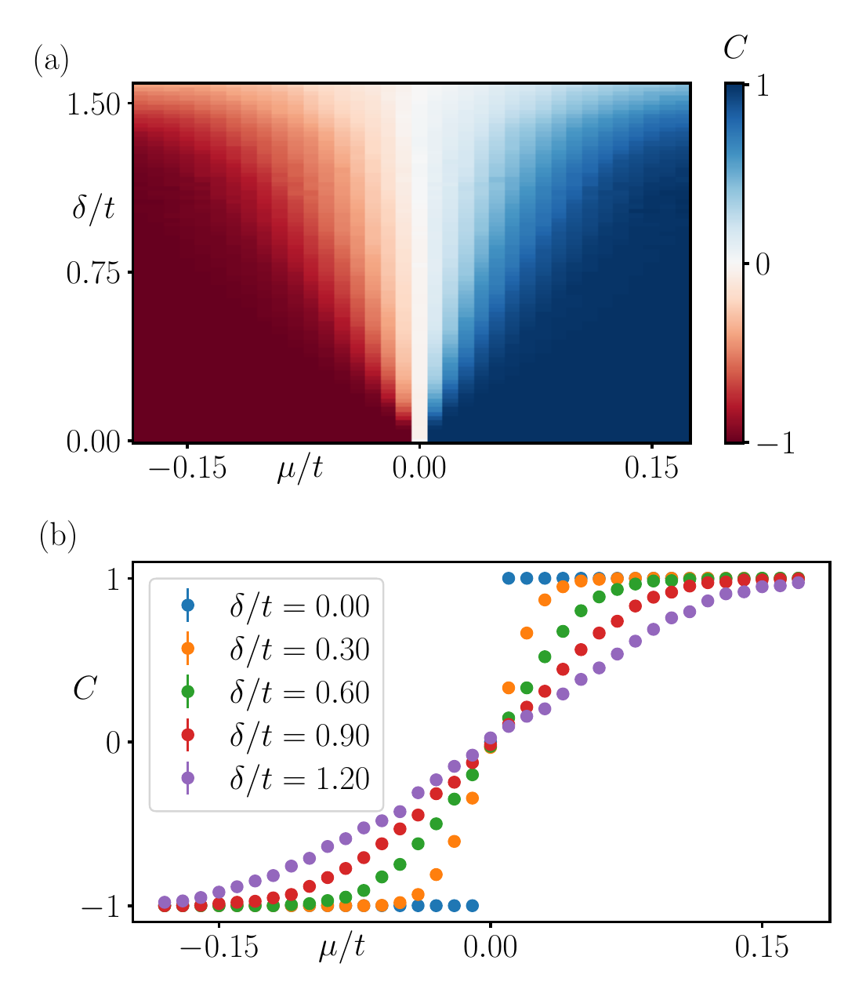
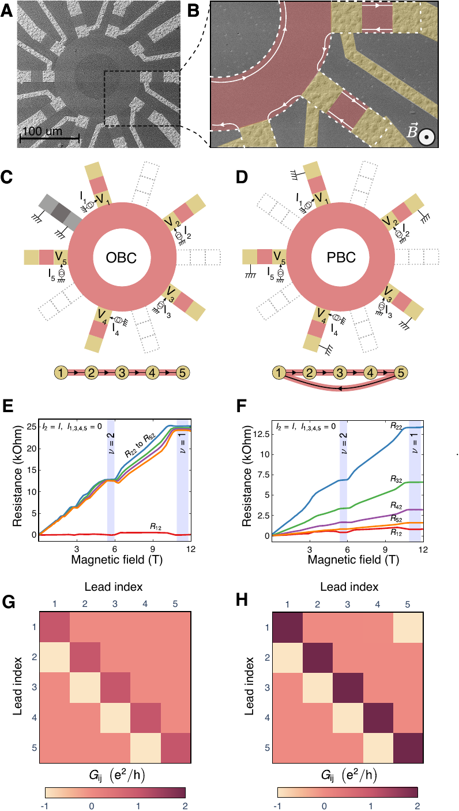
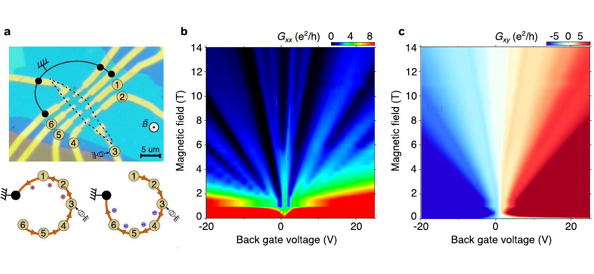

Quantitative strengths
Model building, simulation data, validation, feature design, numerical optimization, large parameter sweeps, and reproducible analysis.
Quantitative physicist · Data science · Quantum transport
I am a postdoctoral researcher at JMU Würzburg working on quantum transport, non-Hermitian topology, and machine-learning-assisted analysis of physical systems. I am also interested in industry roles in data science, quantitative research, simulation, and R&D.
About
My background is theoretical and computational physics. In practice, this means building models, running simulations, generating and cleaning data, checking whether a numerical result is trustworthy, and using code as a way to reason about physical systems.
The common thread is quantitative work: using mathematics, physics intuition, computation, and statistics to understand complex systems. That background translates naturally to data science, quantitative research, simulation, and technical R&D.
Model building, simulation data, validation, feature design, numerical optimization, large parameter sweeps, and reproducible analysis.
Quantum transport, topological phases, disordered systems, real-space diagnostics, eigenvalue problems, and physics-guided machine learning.
Publications
Full publication record is available through Google Scholar.

Raghav Chaturvedi, Viktor Könye, Ewelina M. Hankiewicz.
arXiv:2607.05900
Raghav Chaturvedi, Ion Cosma Fulga, Jeroen van den Brink, Ewelina M. Hankiewicz.
arXiv:2602.12048
Raghav Chaturvedi, Viktor Könye, Ewelina M. Hankiewicz, et al.
Phys. Rev. B 111, 245424
Kyrylo Ochkan*, Raghav Chaturvedi*, Viktor Könye, et al.
Nature Physics 20, 395-401
Burak Özer*, Kyrylo Ochkan*, Raghav Chaturvedi, et al. Under review in Nature Communications.
arXiv:2410.14329Skills
Path
Quantum transport, non-Hermitian topology, machine-learning-assisted analysis, parameter sweeps, and theory support for experimental collaborations.
Thesis: Non-Hermitian topology of transport in quantum Hall systems. Grade: Magna Cum Laude.
Physics major, mathematics minor, CGPA 8.77/10, ranked 3rd in a class of 140.
Contact
I am open to quantitative research, data science, simulation, and R&D roles. The fastest route is email; I am also reachable through LinkedIn.